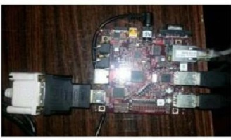
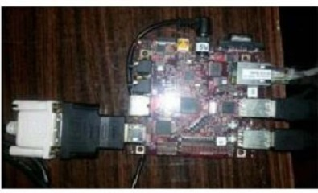

Office #208
Computer Science Building
35 Olden St.
Princeton, NJ 08544
Smarter Systems for Smarter Tomorrow!
Remote object distance estimation for applications in driving assisstance,Navigation,Location sensing and Positioning !.

 

Publication
Statistical approach for distance estimation using Inverse Perspective Mapping on embedded platform
A reliable traffic flow monitoring and traffic analysis approach using computer vision.
The project presents a real time traffic monitoring
system that makes use of image processing algorithm to detect and
estimate the of count of vehicles using motion detection approach.
Traffic congestion is a serious issue, which is the root cause of a
series of serious problems. Conventional traffic light controllers
have limitations because they make use of the predefined
hardware, whose functioning is governed according to program
that does not have the flexibility of modification on real time basis.
The proposed system makes use of a differential algorithm in
order to determine the signaling duration of each lane of
intersection. The system provides different delays for different
junctions thus optimizing the waiting time of each user. This
flexibility of timing and controlling prevents the congestion of
vehicles in squares due to high waiting time for the green ligh.
The proposed system guarantees a high success rate for
minimizing the traffic density at heavily crowded urban
Intersections. Currently, in absence of automated signal control
techniques, the traffic lights are either statically calibrated, or
controlled by on-road policemen, or remotely controlled by
manually seeing video feeds at the traffic control room. In such
a situation, the proposed algorithm ensures adaptive and robust
monitoring on a real time basis. The system can be installed for
N joints intersection, multi-lane traffic flow and can be
integrated as a part of a holistic traffic safety system. Very few
measurements are required, since most of the work is
computational.The hardware implementation has been carried out on
ATxmega256A3U. This system is robust and it is least affected by
disturbances and inaccuracy in measurement. The future scope
of the paper includes implementation of image processing
algorithm on an embedded platform. This will help in faster
processing and reducing power consumption.


Publication
Robust and Adaptive Traffic Surveillance System for
Urban Intersections on Embedded Platform
A reliable traffic flow monitoring and traffic analysis approach using computer vision.
Traditionally electrical appliances in a home are controlled via switches that regulate the
electricity to these devices.Home automation is becoming more and
more popular around the world and is becoming a common practice. The process of home automation
works by making everything in the house automatically controlled using technology to control and do the
jobs that we would normally do manually.
In this project , a unique System for Home automation utilizing Dual Tone Multi Frequency (DTMF) is proposed.It is is
paired with a wireless module to provide seamless wireless control over many devices in a house.
This user console has many keys,each corresponding to the device that needs to be activated.
The user can remotely perform status check of each appliance like the Air Conditioner, Water Control Motor etc
and chnage the status. A voice feedback circuit guides the user to receiver acknowledgements of his actions.
The prototype was implemented using Atmega Microcontroller,DTMF Decoder circuit,Voice playback circuit and sensors and the circuit was fabricated on pcb.


Analysis and Monitoring of a High Density Traffic Flow at T-Intersection Using Statistical Computer Vision Based Approach
A reliable traffic flow monitoring and traffic analysis
approach using computer vision techniques has been proposed
in this work. The exponential increase in traffic density at
urban intersections in the past few decades has raised precious
and challenging demands to computer vision algorithms and
technological solutions. The focus of this algorithm is to suggest a
statistical based approach to determine the traffic parameters
at heavily crowded urban intersections. The algorithm in
addition to accurate tracking and counting of freeway traffic
also offers high efficiency for determining vehicle count at a
high traffic density T-intersection. The system uses Intel Open
CV library for image processing. The implementation of
algorithm is done using C++. The real time video sequence is
obtained from a stationary camera placed atop a high building
overlooking the particular T intersection. The work suggests a
dynamic method where each vehicle at a T intersection is
passed through a number of detection zones and the final count
of vehicles is derived from a statistical equation. The practical implementation of the algorithm
achieves an accuracy upto 92%.


In this work,the aim was to design an architecture for optimum performance in the LOWFER spectrum using software defined radios.
This led to the development of a low cost receiver for LowFER using Tayloe QSD for down conversion of the received RF Frequency instead of a traditional
homodyne/superheterodyne mixer. The design uses a direct conversion process that can be used for up conversion as well as down conversion.Using locally available off-the-shelf components, the
design was successfully implemented at the breadboard level, and interfaced with PC through PC soundcard.
GNU Radio used for processing of received I and Q samples, with function generators used for generating
the incoming RF and local oscillator signals. The project gave an insight into the world of software defined radio
and the challenges associated with hardware realization.The design required several iterations to get all the
blocks to work perfectly. Issues like non-availability of components mismatch and burnouts were faced in plenty.
Setting up the GNU radio environment and interfacing with the I and Q signals was an iterative process too.


Joint Collaboration with Wireless @ VT Collegues.
The Internet of Things ecosystem where every object is acting as node that transmits and receives data at every moment to be a part of
an interconnected ecosystem puts tremendous stress on the existing wireless technology. This shifts the focus
of existing wireless technology to deploy more cells that provide indoor ubiquitous mobile broadband coverage at higher
data rate along with excellent voice service. Femtocells belogn to this class of devices that operate on low power,
provide easy service to the home based equipmentssuch as laptops, notepads, cell phones and ensure high data rates and
coverages. These home basestations are deployed on ad hoc base stations
and introduce major changes in the modeling ofsuch heterogeneous systems in terms of anaThe project aims to analyze the role of femtocells in thecurrent network architecture,
the strategies that ensure their optimum performance in presenceof interference and study the cost effective solutions.
It is concluded that intelligent spectrum access policies includingthe hybrid access can yield
rich results to curb interfernce.The real time system model wasdeveloped by using tools of stochastic
geometry and the access mechanism was studied indetail. The impact of femtocells was studied through
simulations by analysing the metric of coverage
probability and the importance of decoupling of uplink and downlink was stressed.
A power optimal strategy for machine to machine communication!.